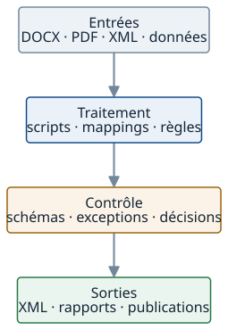

Atelier indépendant
Un interlocuteur responsable de toute la chaîne de traitement
Le cadrage, la réalisation, le contrôle et la livraison restent reliés.
PPR-Solution est une activité indépendante : la même personne suit les sources, les règles, les exceptions et les livrables.
- 01Cadrage
- 02Échantillon et règles
- 03Automatisation
- 04Contrôle humain
- 05Livrables et traçabilité
Continuité
Une responsabilité lisible
L’automatisation sert le volume. Elle ne remplace ni le contrôle des exceptions ni les décisions qui relèvent du client.
- Pas de ruptureentre l’échange initial et la réalisation technique
- Périmètre maîtriséà partir d’un échantillon et de règles disponibles
- Contrôle humainsur les rejets, ambiguïtés et valeurs atypiques
- Traçabilitédes traitements, décisions et livrables
Atelier technique
Des sources aux artefacts livrés
L’atelier regroupe les scripts, mappings, règles, contrôles et journaux nécessaires à la prestation. Il n’est pas vendu comme un logiciel autonome.

Compétences
Documentation structurée et données exploitables
Structuration, contrôle, extraction, transformation, migration, comparaison et génération documentaire à partir de formats techniques documentés. Le modèle et les décisions métier sont fournis ou définis avec le client.
XML · XSD · DTD · Schematron · XPath / XQuery · XSLT · DOCX · S1000D · DITA · DocBook
Confidentialité
Un échange adapté aux sources
Le premier cadrage peut partir d’un échantillon anonymisé. Selon la sensibilité des documents, un NDA ou un canal dédié peut être convenu avant toute transmission.
Le volume, le délai et la part d’automatisation sont confirmés avant engagement ; l’intervention technique ne se substitue pas à une validation juridique, réglementaire ou métier.
Relation directe
Parler au responsable du traitement
Le même interlocuteur examine l’échantillon, précise les règles, réalise les traitements et restitue les exceptions. Les arbitrages restent ainsi reliés aux fichiers et aux livrables concernés.